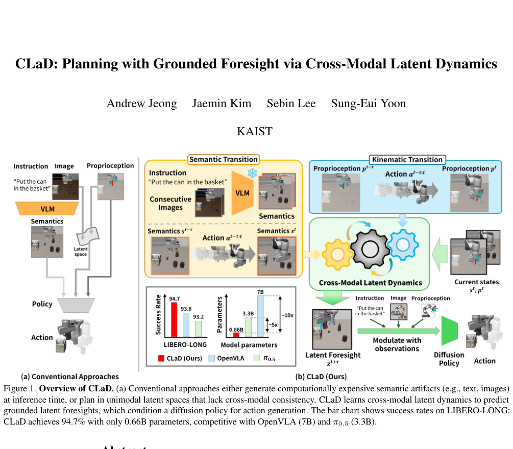
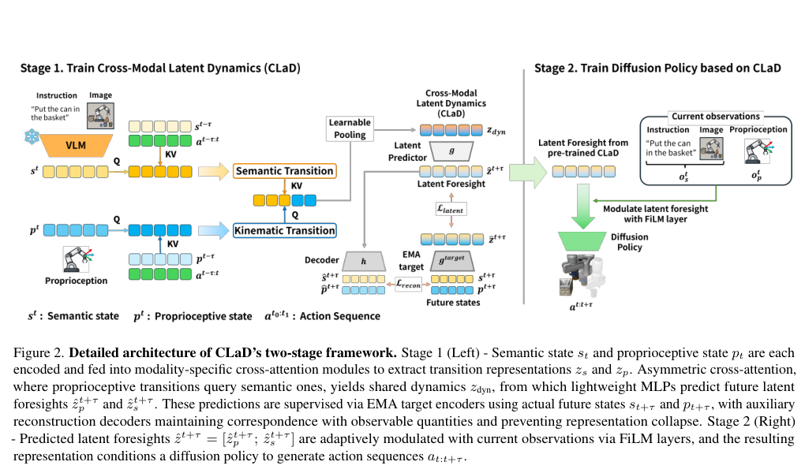
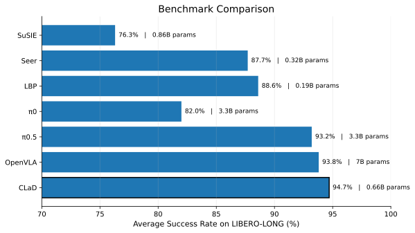
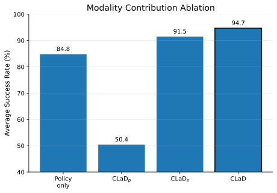
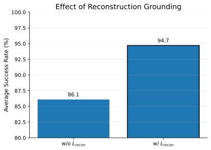

94.7%
LIBERO-LONG average success rate
Project Page
KAIST
Robotic manipulation involves kinematic and semantic transitions that are inherently coupled via underlying actions. However, existing approaches either generate subgoal images or texts, or plan within latent spaces that lack cross-modal understanding. We propose CLaD (Cross-modal Latent Dynamics), a framework that models how proprioceptive and semantic states co-evolve under actions through asymmetric cross-attention that allows kinematic transitions to query semantic ones. CLaD predicts grounded latent foresights via a self-supervised objective with EMA target encoders and auxiliary reconstruction losses, preventing representation collapse while anchoring predictions to observable states. Predicted foresights are modulated with observations to condition a diffusion policy for action generation. On the LIBERO-LONG benchmark, CLaD achieves 94.7\% success rate, competitive with $\pi_{0.5}$ (3.3B) and OpenVLA (7B), with only 0.66B parameters.

Overview
The strongest storyline for the project page is: do not align static states; model how modalities change together under actions. CLaD captures how semantic transitions and proprioceptive transitions co-evolve, converts the shared dynamics into grounded latent foresight, and uses that foresight as an implicit subgoal for a diffusion policy.
Learn transition-level correlations across modalities with asymmetric cross-attention, where proprioceptive transitions query semantic transitions.
Predict future latent states with EMA targets and auxiliary reconstruction, so the foresight stays anchored to observable semantic and proprioceptive quantities.
Reach competitive long-horizon performance with a compact model instead of relying on large semantic generators at inference time.
Method

Encode semantic state and proprioception, then extract transition embeddings from past state-action history.
Use asymmetric cross-attention to turn transition embeddings into a shared cross-modal dynamics token.
Predict future latent embeddings, modulate them with current observations, and condition a diffusion policy on the resulting foresight.
Results

CLaD reaches 94.7% on LIBERO-LONG, outperforming OpenVLA (93.8%) and π0.5 (93.2%) while using many fewer parameters.
The paper reports 25 Hz inference and 4 GB memory, versus OpenVLA at 6 Hz / 15 GB and π0.5 at 10 Hz / 19 GB.
Total parameter count is 0.66B, compared with 7B for OpenVLA and 3.3B for π0.5.
| Method | Avg. SR (%) | Params (B) | Inference (Hz) | Memory (GB) |
|---|---|---|---|---|
| OpenVLA | 93.8 | 7.0 | 6 | 15 |
| π0.5 | 93.2 | 3.3 | 10 | 19 |
| CLaD | 94.7 | 0.66 | 25 | 4 |
Ablations

Full cross-modal foresight outperforms policy-only and single-modality variants. In particular, semantic foresight remains strong, while proprioceptive foresight alone is insufficient.

Removing the reconstruction objective drops performance from 94.7% to 86.1%, showing that latent foresight must remain grounded in observable states.
A good top-tier project page does not repeat the entire paper. It surfaces one main claim, one architecture figure, two or three result highlights, and only the ablations that directly strengthen the central story.
Citation
@misc{jeong2026clad,
title = {CLaD: Planning with Grounded Foresight via Cross-Modal Latent Dynamics},
author = {Jeong, Andrew and Kim, Jaemin and Lee, Sebin and Yoon, Sung-Eui},
year = {2026},
note = {Replace with the final camera-ready BibTeX entry}
}